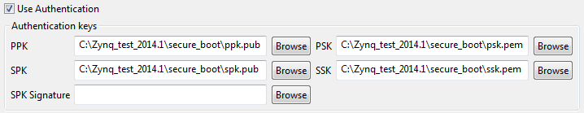

Select the Use Authentication check box to authenticate the boot image or any of the partitions of the boot image.

When using authentication, you must specify the authentication keys. The following authentication keys are available:
Key |
Name |
Description |
Supported File Formats |
|---|---|---|---|
PPK |
Primary Public Key |
This key is used to authenticate a partition. It should always be specified when authenticating a partition. |
*.txt *.pem *.pub |
SPK |
Secondary Public Key |
This key is used to authenticate a partition. It should always be specified when authenticating a partition. |
*.txt *.pem *.pub |
PSK |
Primary Secret Key |
This key is used to sign a partition. It is not mandatory. There are two options:
|
*.txt *.pem |
SSK |
Secondary Secret Key |
This key is used to sign a partition. It is not mandatory. There are two options:
|
*.txt *.sig |
SPK Signature |
Secondary Public Key Signature |
The SPK Signature can be directly specified in cases where you do not want to share the secret key. |
*.txt *.sig |